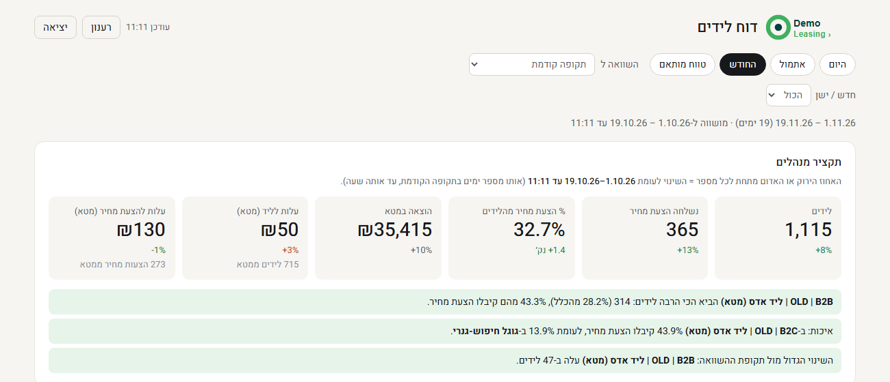
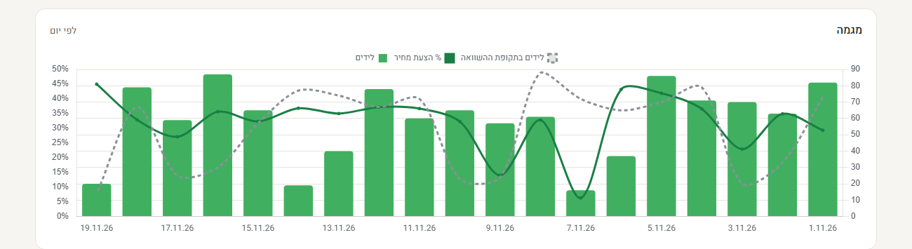
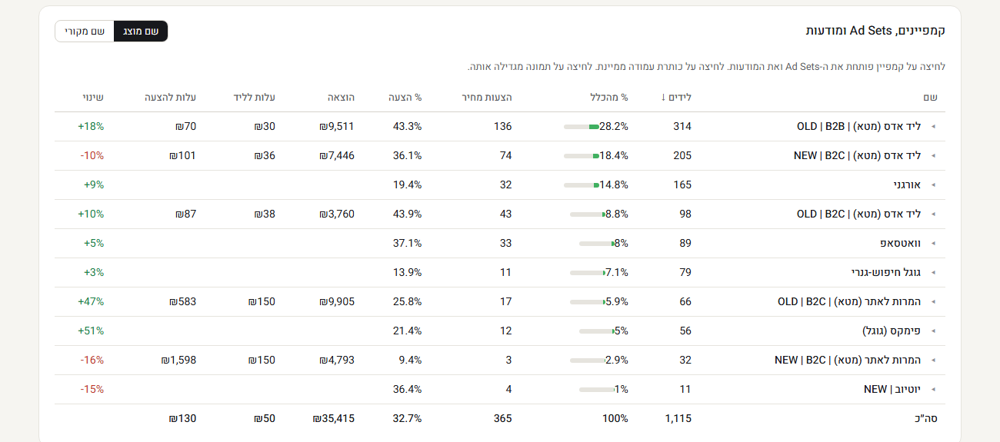
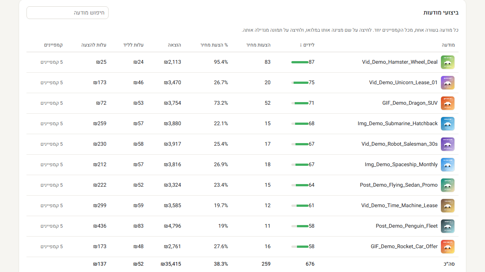
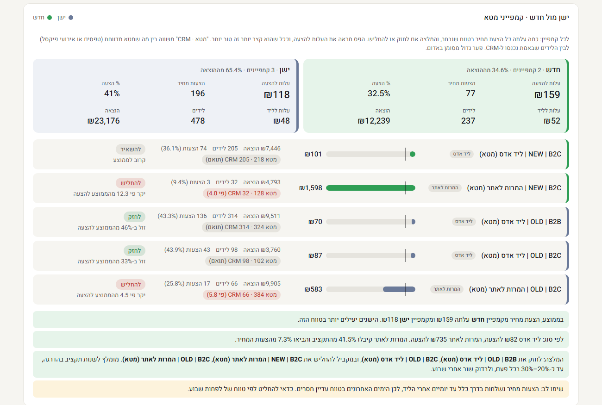
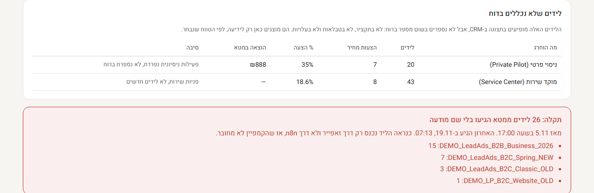

CASE STUDY · שיווק ודאטה
דוח לידים אוטומטי
מה-CRM ועד עלות להצעת מחיר
איך בניתי, בלי צוות פיתוח, דוח חי שמחבר בין הלידים במערכת ה-CRM, ההוצאה בפרסום והמודעות עצמן, ומראה להנהלה, למנהל השיווק ולמשרד הפרסום את אותה תמונה, בזמן אמת.

הנתונים במסמך ובדוח הם נתוני הדגמהדמו חי: leads-report-demo.pages.dev
נקודת הפתיחה
הנתונים היו קיימים. התמונה לא.
הלידים נכנסים ל-CRM ממקורות רבים: טפסי פייסבוק ואינסטגרם, דפי נחיתה, קטלוג באתר, גוגל, וואטסאפ וטלפון. צוות המכירות עובד מתצוגה אחת ב-CRM, ומסמן שם בין היתר אם נשלחה הצעת מחיר, שהיא מדד האיכות העיקרי שלנו.
אבל כדי לענות על שאלה פשוטה כמו "כמה עלתה לנו הצעת מחיר מכל קמפיין?" היה צריך:
- לייצא לידים מה-CRM ולסנן אותם ידנית כמו התצוגה של המכירות.
- למשוך הוצאות ממנהל המודעות של מטא, במסך אחר ובפורמט אחר.
- להצליב שמות קמפיינים ומודעות טכניים וארוכים, ולנחש איזו מודעה זו בכלל.
- לחזור על הכול בכל פעם שמישהו שואל.
הנהלה
רצתה תשובה של שורה אחת: כמה לידים, כמה הצעות מחיר, מה המגמה.
מנהל שיווק
רצה לדעת איזה קמפיין עובד, ישן מול חדש, ואיפה הכסף נשרף.
PPC ומשרד הפרסום
רצו לרדת לרמת Ad Set ומודעה, עם עלות אמיתית להצעת מחיר ולא רק לליד.
אני
רציתי מקור אמת אחד, שמתעדכן לבד ושאפשר לסמוך עליו.
המטרה: דוח אחד, חי, שהמספר בו זהה למספר שאנשי המכירות רואים ב-CRM, עם דריל דאון עד המודעה.
איך זה עובד
ארכיטקטורה פשוטה, בלי שרתים לתחזק
CRMDynamics 365
הלידים, הסטטוסים והצעות המחיר
n8nאוטומציה ואינטגרציות
שולף, מסנן ומאחד
Meta Adsהוצאה, תוצאות,
תמונות וסרטוני מודעות
Cloudflareהדוח עצמו
עם שכבת אבטחה
| רכיב | מה הוא עושה |
|---|
| n8n: שכבת לידים | מריץ בדיוק את אותו פילטר של התצוגה שהמכירות עובדות ממנה ב-CRM, לפי טווח תאריכים בשעון ישראל. מחזיר רק את השדות שצריך, וטלפונים מוצפנים. |
| n8n: שכבת הוצאות | מושך ממטא הוצאה לכל מודעה בטווח, את מה שמטא עצמה מדווחת, וקישורים לתמונה או לסרטון של כל מודעה. |
| Cloudflare Pages | מארח את הדוח. פונקציות קטנות בצד השרת בודקות קוד כניסה, מחזיקות את המפתחות ומטמון של כמה דקות. המפתחות לא מגיעים לדפדפן אף פעם. |
| GitHub | שמירת הקוד והיסטוריית גרסאות. כל שינוי בדוח מתועד וניתן לשחזור. |
| מייל בוקר | תהליך נוסף ב-n8n ששולח כל בוקר את מספר הלידים של אתמול לרשימת תפוצה. |
הדוח לא "יודע" מה זה CRM או מטא. הוא מקבל נתונים מוכנים משכבת ה-n8n, ולכן אפשר להחליף מקור או להוסיף מקור (למשל גוגל) בלי לגעת בדוח.
הצעד הכי חשוב
קודם כל: שהמספרים יתאימו ל-CRM
דוח שהמספר בו שונה ממה שהמכירות רואות מאבד אמון ביום הראשון. לכן הצעד הראשון לא היה עיצוב, אלא שחזור מדויק של התצוגה ב-CRM.
איך עשיתי את זה
- שליפת הגדרת התצוגה עצמה: במקום להעתיק פילטרים מצילומי מסך, שלפתי מה-CRM את הגדרת התצוגה המקורית (FetchXML) עם כל התנאים: בעלים, מקורות ליד, סטטוסים, יחידה עסקית.
- שימוש באותו פילטר בדיוק: שכבת הנתונים מריצה את ההגדרה הזו כמו שהיא, ומחליפה רק את טווח התאריכים.
- אימות ליד מול ליד: השוויתי יום שלם מול ייצוא של המשתמש. המספרים תאמו אחד לאחד.
- שעון ישראל: ה-CRM שומר זמנים ב-UTC. כל יום בדוח מחושב לפי שעון ישראל, כולל מעבר שעון חורף וקיץ.
שמות שבני אדם מבינים
שמות קמפיינים בפרסום נראים כך: KLG_XX_Conversions_Lead-ads_Leasing-B2B_GO05E09E07B03A. טבלת מיפוי פשוטה (באקסל) מתרגמת אותם לשמות כמו "OLD | B2B | ליד אדס", ומוסיפה סיווג: ישן או חדש, פרטי או עסקי, פלטפורמה. שם שלא נמצא בטבלה מסומן בדוח כ"לא ממופה", כך ששום ליד לא נעלם.
עיקרון: הדוח מציג את מה שיש, גם כשזה לא נוח. לידים בלי קמפיין מוצגים כ"אורגני", ולידים שהוחרגו מוצגים בטבלה נפרדת בתחתית.
הדוח · 1
תקציר מנהלים ומגמה
תקציר מנהלים: לידים, הצעות מחיר, אחוז הצעה, הוצאה, עלות לליד ועלות להצעת מחיר. מתחת לכל מספר: השינוי מול תקופת ההשוואה, וההסבר מול מה משווים. מתחת: תובנות שנכתבות אוטומטית.

מגמה: לידים לפי יום (או לפי שעה כשבוחרים יום אחד), אחוז הצעות מחיר, וקו התקופה המושווית. "היום" מושווה לאתמול עד אותה שעה, כדי שההשוואה תהיה הוגנת.
הדוח · 2
מקמפיין ועד מודעה

טבלת קמפיינים עם דריל דאון: לחיצה על קמפיין פותחת Ad Sets, ולחיצה על Ad Set פותחת מודעות. לכל שורה: לידים, הצעות מחיר, הוצאה, עלות לליד, עלות להצעה ושינוי.

ביצועי מודעות: כל מודעה בשורה אחת, מכל הקמפיינים, עם תמונה קטנה. לחיצה פותחת את התמונה או מנגנת את הסרטון. כך גם מי שלא מכיר את שמות הקבצים מבין מיד על איזו מודעה מדובר.
הדוח · 3
ישן מול חדש, והמלצות

השוואה בצבעים בין קמפיינים חדשים לישנים, עם עלות להצעת מחיר לכל קמפיין, קו ממוצע, המלצה אוטומטית (לחזק, להשאיר, להחליש) והשוואה בין מה שמטא מדווחת לבין מה שבאמת נכנס ל-CRM.

בתחתית: לידים שהוחרגו מהדוח (לשקיפות), והתראה אדומה כשליד מקמפיין מטא מגיע בלי שם מודעה, כלומר כשמשהו בקליטה נשבר.
מה הדוח חשף
ברגע שהנתונים יושבים יחד, הבעיות קופצות
הערך הגדול לא היה רק בחיסכון בזמן. ברגע שהלידים, ההוצאה והמודעות הופיעו באותו מסך, התגלו בעיות שלא נראו קודם:
| ממצא | מה גילינו | מה עשינו |
|---|
| איוונטים שנספרים ביתר | אירוע "שליחת טופס" באתר נספר במטא כמה פעמים יותר ממספר הלידים האמיתי. קמפייני האתר למדו מנתון שגוי. | זיהוי, והמלצה לעבור ל-Conversions API. |
| כל ליד נוצר פעמיים | שתי אינטגרציות יצרו כל ליד מטופס פייסבוק, ולפעמים דווקא העותק בלי שם המודעה נשאר. | אימות שהאינטגרציה החדשה קולטת 100%, וכיבוי הכפולה. |
| שיוך שנדרס | כשאדם חוזר, תהליך הכפולים ב-CRM העתיק את המקור הישן על הליד החדש. | תיעוד והעברה לטיפול במערכת ה-CRM. |
| לידים לא רלוונטיים | מועמדים לעבודה מקמפיין גיוס נכנסו לתור של המכירות. | זיהוי וסינון. |
| פרמטרים שנאבדים | חלק מהלידים מהאתר הגיעו בלי שם קמפיין, כי ה-UTM לא נשמר במעבר בין עמודים. | המלצה לשמירת הפרמטרים בכניסה. |
השורה התחתונה: לפני הדוח, חלק מההחלטות על תקציב התקבלו לפי מספרים של מטא שלא תאמו את המציאות ב-CRM.
הצעד הבא
Conversions API: לתת לפרסום ללמוד מהמכירות
היום הפרסום לומד מ"פינג" שמגיע מהדפדפן ברגע שמישהו לוחץ "שלח" בטופס. לא כל לחיצה היא ליד, וחלק מהסימנים נחסמים או נספרים פעמיים. ואחרי הלחיצה, למטא אין שום מידע על מה שקרה בפועל.
ליד נכנס ל-CRMרק לידים אמיתיים
n8nכל 15 דקות, מידע מוצפן
מטא"ליד" ו"הצעת מחיר נשלחה"
- ספירה מדויקת: רק לידים שבאמת נכנסו למערכת.
- למידה מאיכות: מטא יודעת מי קיבל הצעת מחיר, ויכולה לחפש עוד אנשים כאלה.
- סטנדרט מקובל: זו ההמלצה הרשמית של מטא, וכך עובדים היום רוב המפרסמים.
- שינוי זהיר: שמות האירועים חדשים, כך ששום קמפיין קיים לא משתנה עד שמחליטים. מתחילים מקמפיין אחד, משווים, ורק אז מרחיבים.
מה עוד בתוכנית
- חיבור הוצאות גוגל, כך שעלות לליד ולהצעה תהיה גם לגוגל.
- תיקון שמירת פרמטרי הקמפיין באתר, כדי לצמצם לידים "אורגניים" שבעצם הגיעו מפרסום.
כלים ותובנות
איך זה נבנה, ומה למדתי
Claude Code
שותף לבנייה: כתיבת הקוד, שליפת הגדרות מה-CRM, בניית התהליכים ב-n8n, בדיקות והעלאה לאוויר.
n8n
החיבורים: CRM, מטא, מייל יומי, ובהמשך Conversions API.
Cloudflare Pages
אירוח הדוח, פונקציות קטנות לאבטחה ולמטמון, בלי שרת לתחזק.
GitHub
שמירת הקוד, היסטוריית שינויים ואפשרות לחזור לכל גרסה.
מה למדתי בדרך
- להתחיל מהמקור: להעתיק את הגדרת התצוגה מה-CRM עצמו חסך ויכוחים על "למה המספר שונה".
- לאמת לפני שמעצבים: מספר אחד שתואם ל-CRM שווה יותר מעשרה גרפים יפים.
- להציג גם את מה שלא נוח: לידים בלי מקור, פערים מול מטא, לידים שהוחרגו. השקיפות בונה אמון.
- שינויים קטנים, מהר: הדוח השתנה כמעט כל יום לפי הפידבק, וכל שינוי עלה לאוויר תוך דקה.
- דוח טוב מוביל לשאלות טובות: הממצא החשוב ביותר, האיוונטים, לא היה חלק מהתוכנית. הוא פשוט קפץ מהנתונים.